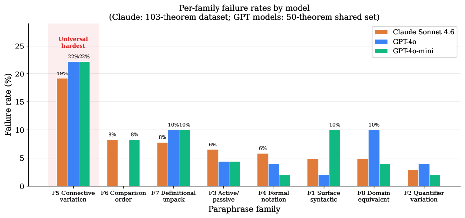
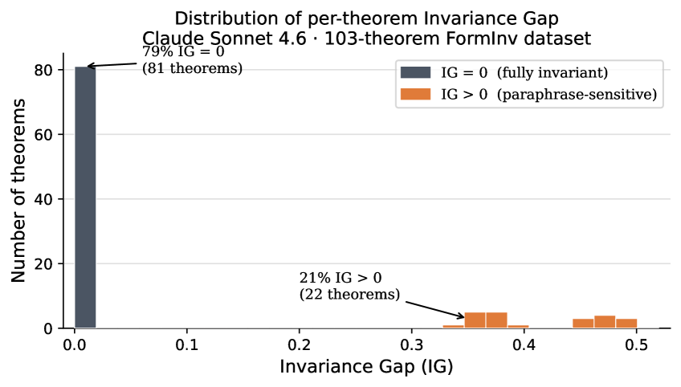

Builds a paraphrase-invariance benchmark on canonical theorem statements taken from Mathlib4 and ntp-mathlib, with 18 Lean4 proofs certifying representative paraphrase equivalences.
Abstract
A paraphrase-quality audit of MathCheck (ICLR 2025) detected 4 semantically incorrect paraphrases in 129 groups (3.1%); removing them drops GPT-4o from rank 2 to rank 4 and elevates Claude Haiku and DeepSeek V3 above it. Cross-model unanimity found these errors automatically for under $10; in our own dataset the same protocol found that 47% of auto-generated connective-variation paraphrases were semantically incorrect. That flaw compounds a deeper measurement gap. On the theorems every model answers correctly in canonical form, a semantically equivalent rewording still flips the answer for 5-42% of them: Claude Haiku 4.5 flips a known-correct answer about 9x as often as DeepSeek V3 (41.9% vs. 4.7% on the 43 theorems all models share), a difficulty-controlled gap we call the Conditional Inconsistency Rate (CIR). The CIR ranking replicates on an independent 103-theorem set. Raw Semantic Consistency Rates (SCR) span 50-82% across 9 models, but this spread is mostly a mechanical consequence of compounding accuracy over k 6 paraphrases; what CIR isolates is the within-theorem clustering of failures. Because no model dominates on all paraphrase families, the families a benchmark includes implicitly fix its model ranking (a No-Free-Benchmark corollary). FormInv supplies the audit protocol, CIR and SCR as invariance measures, evaluated on 9 models across 366-811 items whose canonical statements are Lean4-verified, and FormInvSelector for regime-aware model selection.
Problem
Mathematical reasoning benchmarks measure accuracy on canonical problem statements. They do not test whether a model's answer stays the same under semantically equivalent rewordings. Programmatically generated paraphrases in existing benchmarks are also often semantically incorrect.
Approach
FormInv draws 103 curated Mathlib4 theorems and 100 harder ntp-mathlib theorems as Lean4-verified canonical statements. These are paraphrased across 8 families, with equivalence established by SymPy, templates, or expert review. Lean4 proofs certify only representative examples. Invariance is measured with an Invariance Gap metric grounded in Differential Item Functioning (DIF) theory, a Semantic Consistency Rate (SCR), and a Conditional Inconsistency Rate (CIR). A cross-model unanimity audit flags faulty paraphrases, and FormInvSelector recommends models per paraphrase family.
Results
Across 9 models, SCR ranges from 50% (Claude Haiku 4.5) to 82% (DeepSeek V3). Model rankings reverse across paraphrase families. The unanimity audit found 11 bad paraphrases in FormInv and 4 in MathCheck, and removing the MathCheck errors changes its model ranking.

Figure 1: Per-family failure rates across three representative models (3-model shared evaluation). F5 (connective variation) is the highest-failure family for all models; F6 (comparison order) shows the strongest complementarity (Claude: 16.7%, GPT-4o: 0.0%).

Figure 3: Per-theorem IG distribution across all 9 models and 103 theorems. The distribution is strongly bimodal: 79% of theorems have IG =0 (consistent responses across all paraphrase families) and 21% have IG \approx 0.42 (fail on 1–3 families).